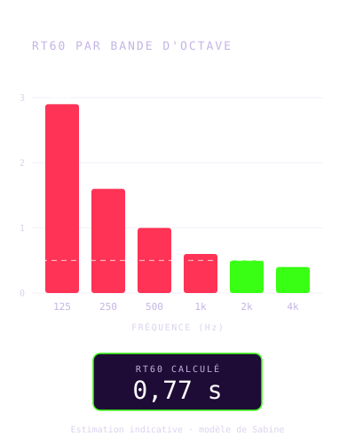
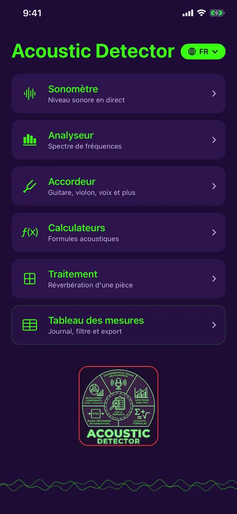
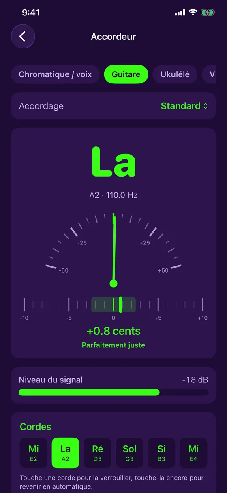
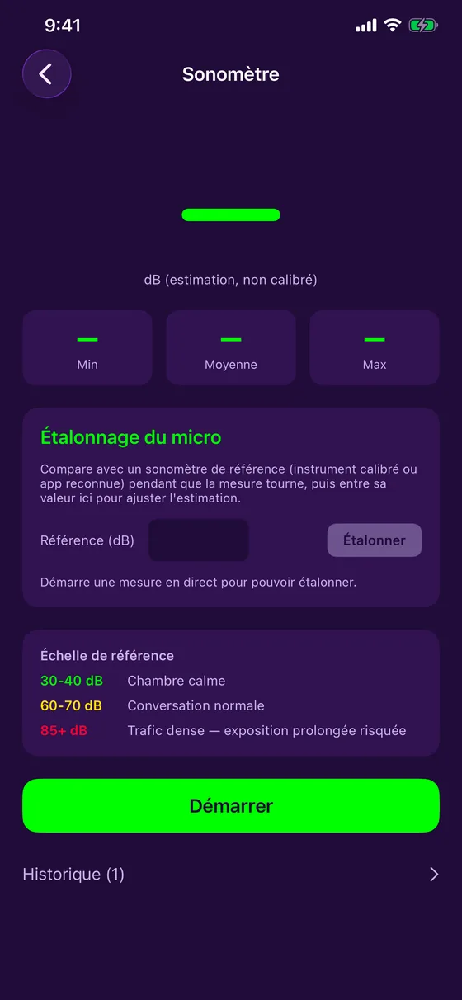
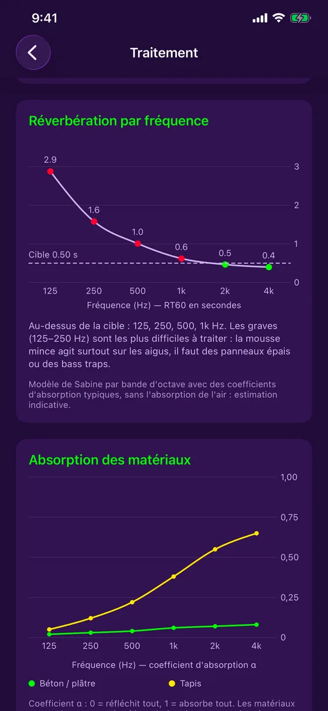
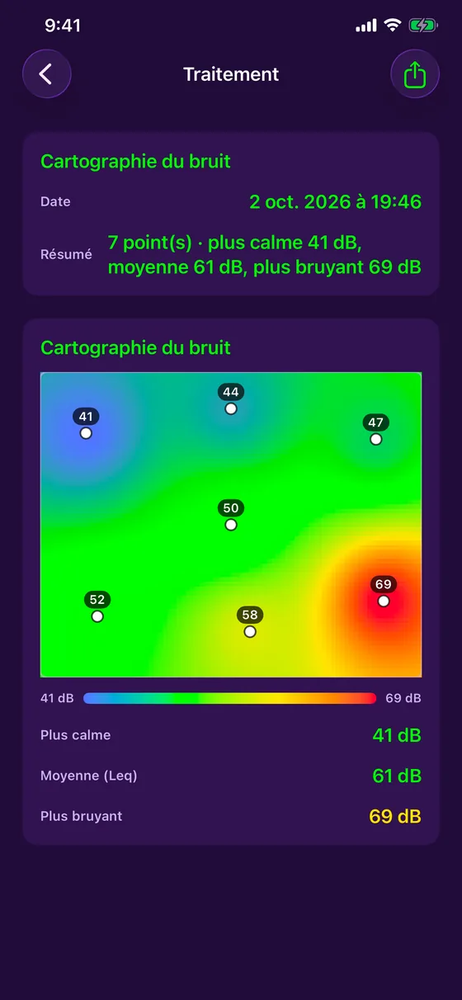
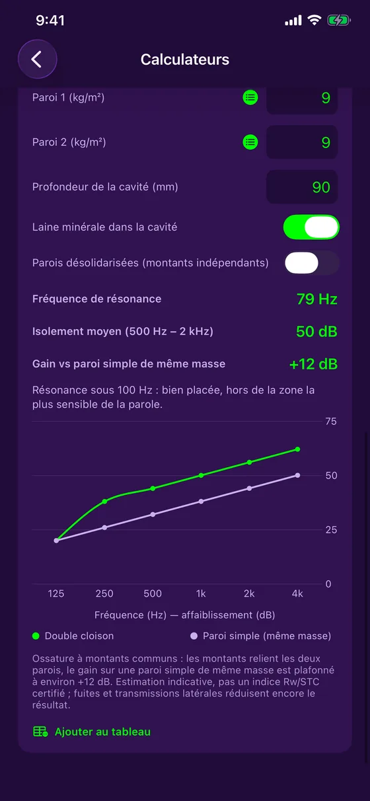
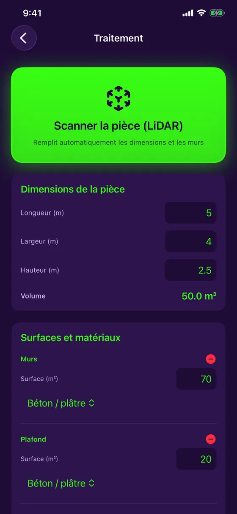
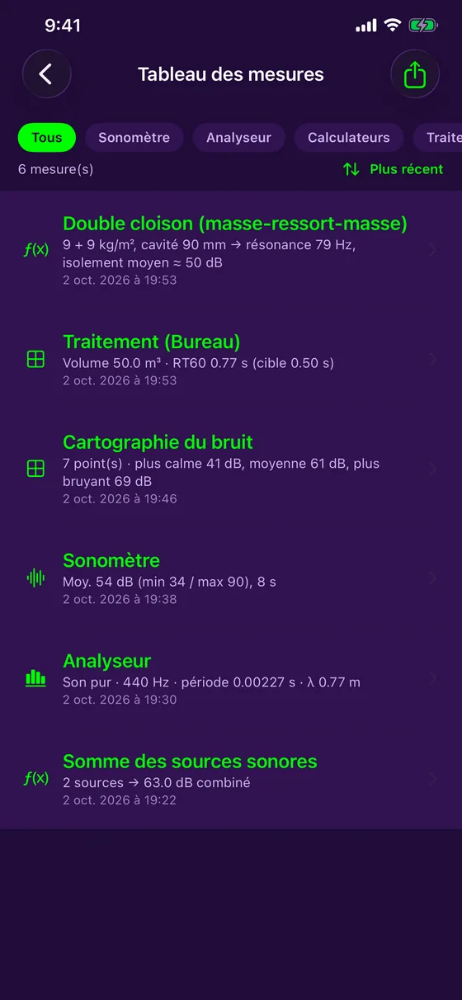

Mesure sonore et traitement acoustique
Écoutez. Analysez. Corrigez.
Acoustic Detector transforme votre iPhone en outil d'acoustique. Mesurez le bruit, analysez le spectre, scannez une pièce au LiDAR, puis découvrez où elle résonne et combien de mousse acoustique ajouter. Gratuite, 100 % hors ligne, en 7 langues.

Version 1.4.1 : un accordeur gratuit, plus stable et plus précis
Acoustic Detector ajoute un accordeur gratuit pour guitare, ukulélé, violon et plus, et parle maintenant français, anglais, espagnol, allemand, portugais, italien et japonais.
- Accordeur gratuit : guitare (5 accordages), ukulélé, violon, alto, violoncelle, mandoline, banjo, et mode chromatique pour la voix
- Version 1.4.1 : lecture plus stable qui ignore les mesures aberrantes, aiguille plus précise, indicateur du niveau du signal, ukulélé baryton
- Notes en Do Ré Mi ou en C D E selon la langue, aiguille précise, vibration quand c'est juste
- 7 langues, au choix dans le menu principal
- Version 1.2 : le RT60 par bande d'octave, de 125 Hz à 4 kHz, avec votre cible
- Absorption des matériaux : la courbe de chaque surface de la pièce
- Cartographie du bruit : mesurez à plusieurs endroits et obtenez une carte de chaleur
- Double cloison : fréquence de résonance et isolement par fréquence
- L'app est gratuite : sonomètre, analyseur, tableau des mesures et export PDF inclus ; Traitement et Calculateurs avec un achat unique
Version 1.4.1 disponible sur l'App Store.
Un outil indicatif, honnêtement présenté. Le micro de l'iPhone n'est pas un instrument certifié : les valeurs affichées sont des estimations, clairement identifiées comme telles, avec un étalonnage manuel facultatif pour affiner la précision. Acoustic Detector ne remplace pas un instrument calibré pour une conformité réglementaire officielle.
Ce que fait Acoustic Detector
Un seul appareil pour mesurer et corriger
Sonomètre en direct
Niveau en dB en temps réel, avec minimum, moyenne et maximum, étalonnage du micro et historique en couleurs.
Analyseur de spectre
Analyse des fréquences en direct, avec détection d'un son pur : fréquence, période et longueur d'onde.
Traitement d'une pièce
Le temps de réverbération (RT60) comparé à la cible de votre usage, et la quantité de mousse acoustique à ajouter.
Scan LiDAR
Sur iPhone Pro, balayez la pièce : dimensions et surface de chaque mur se remplissent toutes seules.
Carte du bruit
Mesurez le niveau à plusieurs endroits et repérez les zones calmes et bruyantes sur une carte de chaleur.
Accordeur
Guitare, ukulélé, violon, alto, violoncelle, mandoline, banjo, ou n'importe quelle note et votre voix : l'aiguille et les cents en direct.
Calculateurs
Somme de sources sonores, pression acoustique, fréquence et longueur d'onde, et calcul de double cloison.
Aperçu
Sobre, précis, prêt pour le terrain








Pour qui
Du chantier au studio
Entrepreneurs et techniciens
Mesurez le bruit d'un lieu, vérifiez une cloison, estimez le traitement d'une pièce avant de soumissionner.
Studios, musiciens, audio
Calculez la réverbération d'une salle, repérez les graves problématiques, estimez la mousse à ajouter.
Maison et bureau
Cinéma maison, bureau à la maison, salle de réunion : trouvez où ça résonne et quoi y faire.
Prix
Gratuite, avec un achat unique facultatif
Gratuit
- Sonomètre en direct et étalonnage
- Analyseur de spectre
- Accordeur (guitare, violon, voix et plus)
- Tableau des mesures
- Export PDF avec graphiques
Complet
- Tout le gratuit
- Traitement : RT60, absorption, scan LiDAR, carte du bruit
- Calculateurs : sources, pression, ondes, double cloison
- Pas d'abonnement
Le prix est affiché par l'App Store selon votre pays. Si vous aviez acheté l'app avant qu'elle devienne gratuite, tout reste débloqué automatiquement.
Prêt à écouter votre pièce ?
Acoustic Detector est disponible sur l'App Store, pour iPhone. Gratuite, avec un achat unique facultatif.
Télécharger sur l'App Store